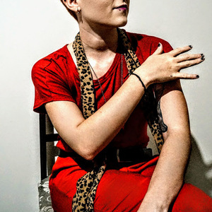

"Sou formada na área de ciências sociais, além disso, sempre me interessei pelas inovações tecnológicas e as possibilidades que elas nos trazem."

Eu sou Mirna, atualmente estudante da instituição Resilia Educação. Esse jogo foi o Projeto Final do Primeiro módulo do curso: Full Stack Web Developer. Que busca desenvolver habilidades tanto de Hard Skills como de Soft para atuar como profissional nesta mesma área. Nesse primeiro módulo aprendemos conceitos básicos de HTML5, CSS3 e demos nossos primeiros passos em JavaScript. O jogo "Fogo no Parquinho: Hora da Aventura" utiliza-se de personagens da série da Cartoon Network para desenvolver um jogo no estilo textual. Este jogo foi pré-requisito para aprovação no módulo vigente.